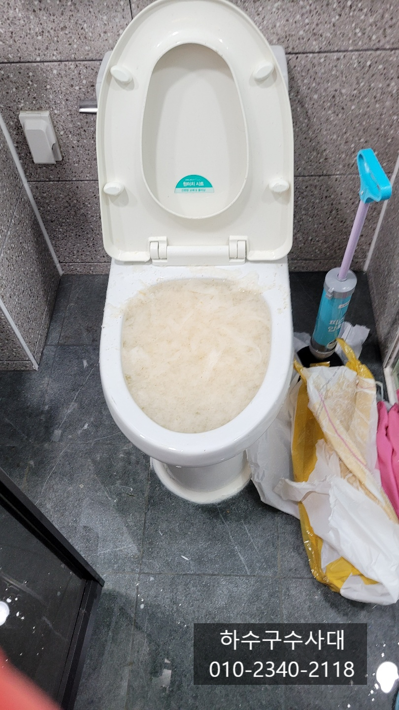
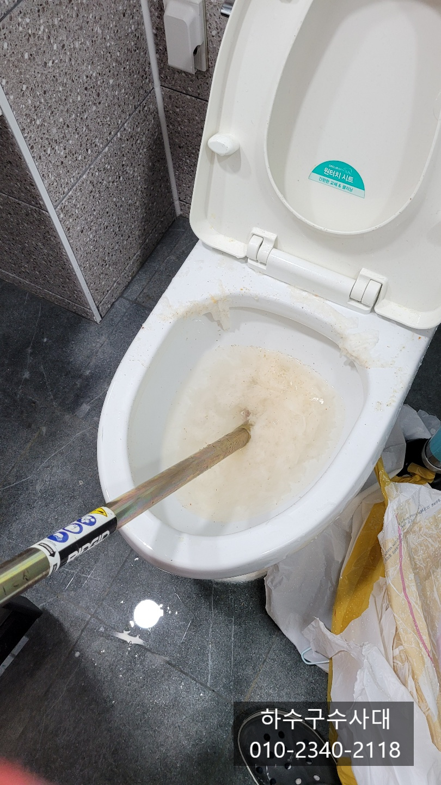
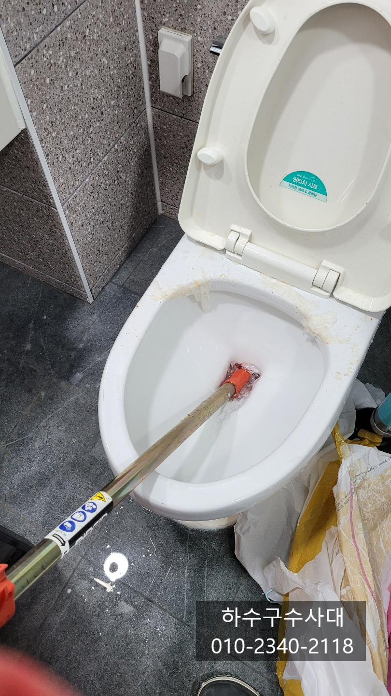
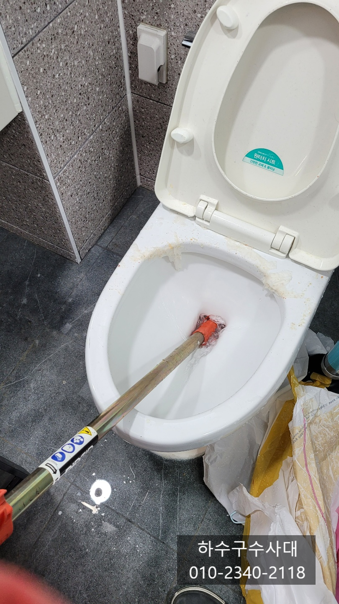
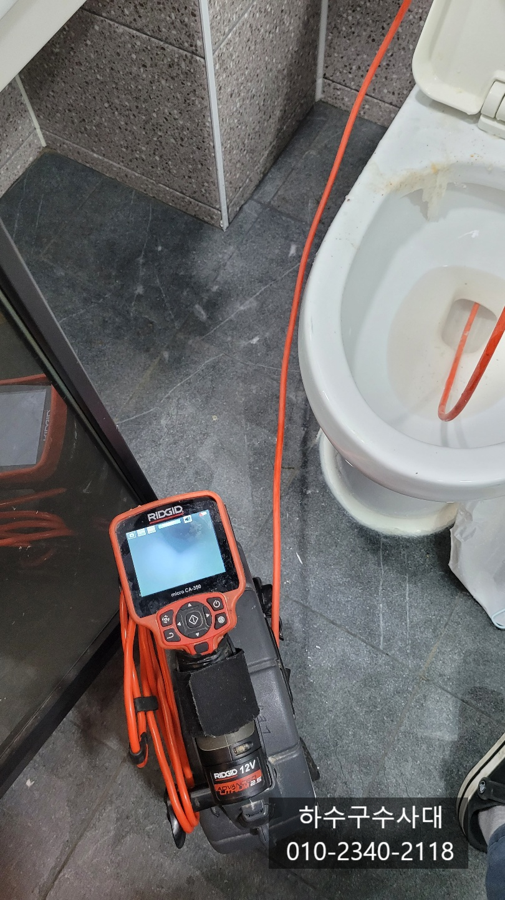
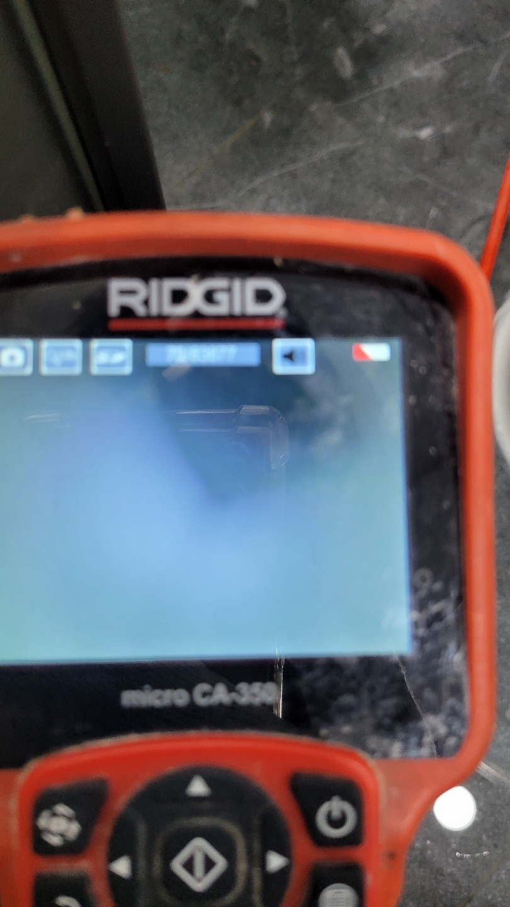
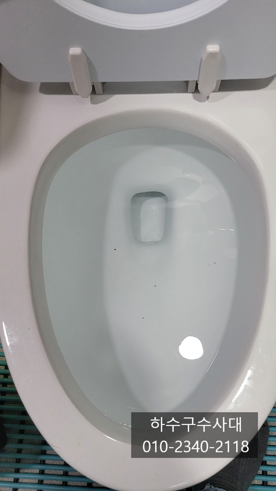

🏠 화성 동탄 병점 변기막힘해결 반송동 기산동 변기막힘
화성 병점 변기막힘 전문 시공 후기

📋 작업 개요
- 위치: 화성 병점, 병점, 화성
- 서비스 유형: 변기막힘, 하수구막힘, 배관막힘, 뚫는업체, 배관청소
- 작업 일시: 2021. 10. 16. 23:00
- 업체명: 하수구수사대 (010-5615-2118)
🔍 문제 상황
화성 동탄 병점 변기막힘해결 반송동 기산동 변기막힘
안녕하세요
슬기로운하수구생활 & 하수구수사대 입니다
오늘은 변기막힘 현장을 다녀왔는데요
변기막힘의 원인은 다양하지만 대부분
단순하게 휴지,물티슈,음식물 등으로 단순하게
막히는 경우가 많습니다.
가끔 플라스틱이나 변기청소를 하다가
솔이나 수세미가 들어가는 경우도 있습니다
변기막힘은 대부분 집에 구비하고 있는 장비로
뚫리기도 하지만 단단히 막히게 되면
1~2시간을 내어 뚫으려해도 쉽지 않은경우가 종종 생기게
됩니다.
슬기로운하수구생활
010-2340-2118
오늘 다녀온 현장에 들어갔을때
고객분이 얼마나 많은시간과 여러가지 방법을
시도한 흔적이 고스란히 남아있는것으 보였습니다.
압축기,펑크린,압력식 등등 여러가지 방법으로
시도해 보셨지만 물을 내리면 변기밖으로 흘러내려

🔎 원인 분석
💡 전문가 진단: 슬기로운하수구생활 010-2340-2118
결국 저희 하수구수사대에 의뢰해 주셨습니다.
철물점에서 판매하는 장비로도 대부분 해결이 되지만
이마저도 해결이 되지 않는다면 전문가의 도움을 받는것도
좋은 방법이에요. 그렇다고 가끔 막히는 변기막힘때문에
전문장비를 사기에는 좀 무리가 있는것 같습니다^^
전문장비는 배관깊숙히 통과하기 때문에
휴지나 물티슈때문에 막히는 경우 대부분
뚫리게 됩니다. 하지만 음식물이나 이물질등이
들어가서 막혔다면 이물질은 빼내는 작업이 필요합니다.
상황에 따라 쓰는 장비도 다르기 때문에
상황을 판단할수 있는 내시경카메라도 있으면 좋겠죠^^
장비를 깊게 넣어 막힌 부분을 관통하지 물이
천천히 빠지기 시작합니다. 고객님께서도
이렇게 간단하게 뚫릴줄은 몰랐다고 하시면서
조금 놀라시긴 하셨는데 그래도 몇시간동안
고생한걸 생각하니 속이 후련하다고 하셨습니다^^
제대로 뚫렸는지 알아보는 방법은 두가지 방법이 있는데요
한가지는 내시경카메라로 보는것과
또 한가지는 휴지를 변기에 넣어 3~4번 정도 내려서
시원하게 내려가면 제대로 뚫렸다고 할수 있습니다.
이곳은 내시경카메라로 변기 내부를 보니

🔧 작업 과정
오물이 내려가는 구멍이 시원하게 뚫려있는것을
확인하였습니다. 단순 휴지막힘으로 결론이 났습니다^^
내시경카메라로 보았지만 그래도
한번쯤은 휴지테스트를 하는것이
작업자 입장에서도 편안하여 한번더 테스트를
해보았습니다.
두번째 현장을 도착하였을땐 겉으로 볼땐
정상적으로 보이지만 물을 내려면 천천히 차올랐다가
천천히 내려가는 증상입니다.
물이 천천히 내려가다 꿀럭꿀럭하는 증상인데
대부분 변기에 이물질이 있어 천천히 빠지는 증상이라고
판단하시면 되는데요 우선 내시경카메라로
변기내부 상태를 파악한후 이물질이 있다면
석션이라는 흡입장비로 빨아들이는 작업을 진행합니다.
화성 동탄 병점 변기막힘해결 반송도 기산동 변기막힘
내시경카메라로 확인해보니 휴지가 무언가에 결려
내려가지 못하고 걸려있는것을 확인하여
석션장비로 빼내는 작업을 진행합니다.
막힘의 원인을 바로 요놈입니다^^
변기커버 인데요 고객님께서 얼마전 변기커버를
교체하셨는데 아마도 실수로 떯어뜨려 변기안으로
들어간 모양입니다.
고객님은 그것도 모르고 며칠전 놀러온 동생들이
음식물을 넣었을거라면 괜한 동생들을
의심하고 있었다네요, 게다 싸우기까지 ㅜㅜ
내시경카메라를 통해 변기내부가를 확인해보니
휴지한장없이 깨끗합니다
간혹 사진처럼 변기내부에 아무것도 없이 나가는 구멍이
뻥 뚫려있지만 물이 내려가지 않는 경우도
있는데 이는 배관에서 막히거나 변기불량일수도
있습니다. 변기 막힘증상은 다양해 전문가도
현장을 봐야 정확한 진단을 할수가 있어요^^


✅ 작업 완료
마찬가지로 이곳도 휴지테스트를 해보고
시원하게 내려가는 것을 확인하고 현장을 마무리했습니다^^
고객님께서도 변기물이 내려가지않아 일보기가
답답했는데 이제야 속이 시원하다면
감사하다고 하셨습니다.
변기막힘 뿐만아니라 각종 하수구막힘을 해결하는 전문업체이니
언제든지 연락주세요^^
그럼 오늘도 행복한 하루 보내십시요
하수구수사대




⚠️ 하수구 배관 막힘 예방 및 관리 가이드
- ✅ 머리카락, 비닐, 물티슈 등 물에 분해되지 않는 이물질은 하수구 유입을 절대 금지해 주세요.
- ✅ 하수구 거름망을 씌우고 모여진 이물질은 주기적으로 쓰레기통에 바로 비워주셔야 합니다.
- ✅ 배관 노후가 심할 경우 이물질이 더 쉽게 걸리므로 주기적인 배관 세척(고압세척 등)을 권장합니다.
- ✅ 작업 후 1년 이내 재발 시 하수구수사대에서 무상 A/S 보증 서비스를 제공합니다.
💡 핵심 정리
- 확실한 장비 작업(내시경 점검 및 샤프트 스케일링)으로 원인을 뿌리 뽑습니다.
- 작업 후 1년 이내에 동일한 부위 재발 시 100% 무상 A/S 서비스를 보장합니다.
- 서울 · 경기 · 인천 전 지역에 24시간 언제든 긴급 출동할 수 있도록 항시 대기 중입니다.
❓ 자주 묻는 질문 (FAQ)
🚨 화성 병점 변기막힘 문제로 고민이신가요?
정확한 원인 진단과 확실한 시공으로 재발 없는 해결을 약속드립니다.
24시간 긴급 출동 | 서울 · 경기 · 인천 전지역 | 1년 내 재발 시 무상 A/S